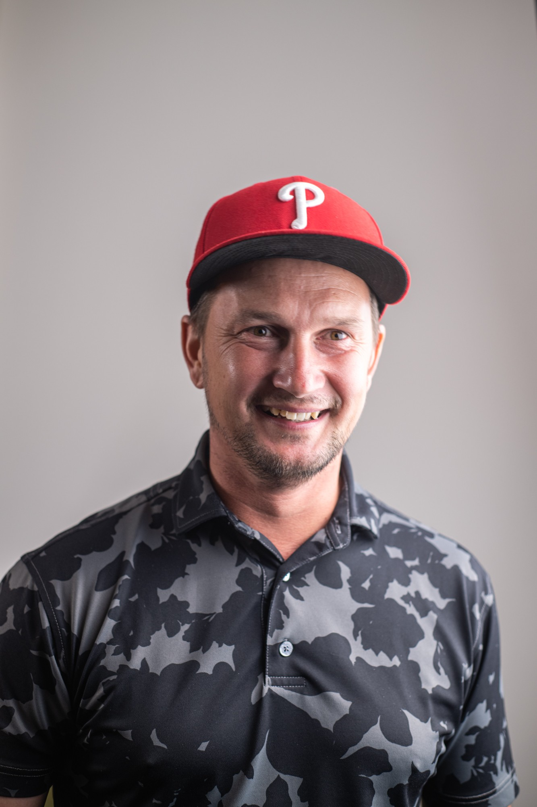
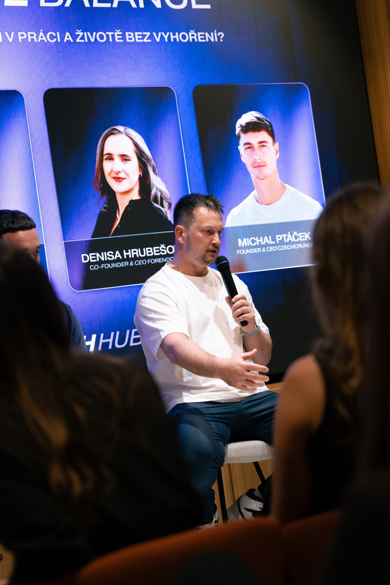
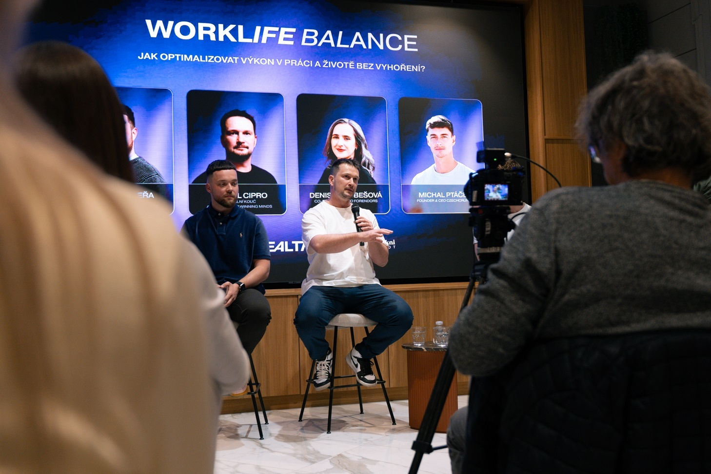
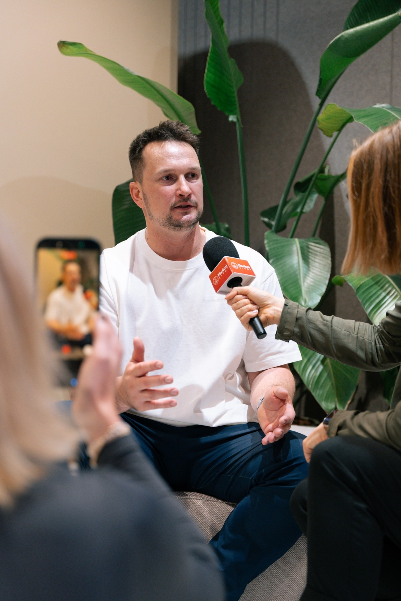

1:1 sezení
Mentální koučink
Individuální sezení zaměřená na klid v hlavě, zvládání tlaku a návyky, které fungují i v náročných dnech. Pro sportovce, manažery i každého, kdo chce podávat výkon bez vyhoření.
Mentální kouč a mentor
Pomáhám lidem najít klid v hlavě a jistotu ve výkonu. Koučuji, mentoruji, občas vypomáhám na tenisovém kurtu a po večerech stavím věci s AI.

O mně
Ukázkový textPracuji s tím, co se děje v hlavě, když jde o hodně. V koučinku propojuji práci s myšlením a emocemi se zkušenostmi ze sportu, protože tlak na výkon znám i zevnitř.
Věřím v jednoduché nástroje, poctivou práci a rozhovory, po kterých je jasnější, co dělat dál. Když zrovna nekoučuji, bývám na kurtu nebo u počítače, kde s pomocí AI stavím aplikace a weby. Tenhle web vznikl přesně tak.

Dovednosti
Co dělám
Každá čerpá z těch ostatních. Mentální trénink drží formu na kurtu, kurt učí disciplíně a kód dává hlavě prostor vypnout.
Individuální sezení zaměřená na klid v hlavě, zvládání tlaku a návyky, které fungují i v náročných dnech. Pro sportovce, manažery i každého, kdo chce podávat výkon bez vyhoření.
Provázím lidi a týmy při rozhodování, růstu a hledání směru. Bez frází, s konkrétními kroky a pravidelnou zpětnou vazbou.
Vypomáhám jako trenér. Řeším techniku i hlavu hráče, protože jedno bez druhého nefunguje.
Kurt · 23,77 × 10,97 mStavím nástroje, aplikace a weby s pomocí AI. Rychle, intuitivně a pro radost.
Zkušenosti
Ukázkový obsahHlavní zastávky, na kterých stavím svou práci s lidmi.
Individuální koučink a dlouhodobý mentoring pro lidi, kteří chtějí růst a podávat výkon bez vyhoření.
Pomáhám s tréninky a s mentální přípravou hráčů před zápasy.
Vlastní nástroje a weby postavené s pomocí AI, od nápadu po nasazení.
Firmy a role, kterými jsem prošel, a co jsem si z nich odnesl do práce s lidmi.
Školy, koučovací výcviky a certifikace, na kterých stavím.
Média a vystoupení
Panelové diskuse, rozhovory a podcasty o tom, jak podávat výkon v práci i v životě bez vyhoření.

Diskuse s Denisou Hrubešovou (Forendors) a Michalem Ptáčkem (CzechCrunch).

Rozhovor o tom, proč výkon začíná v hlavě a jak s ní pracovat v praxi.
Spolupráce
Ukázkový obsahJednotlivci i týmy ze sportu, byznysu a technologií.
Kontakt
Napište mi pár vět o tom, co právě řešíte. Ozvu se a domluvíme si úvodní konzultaci.